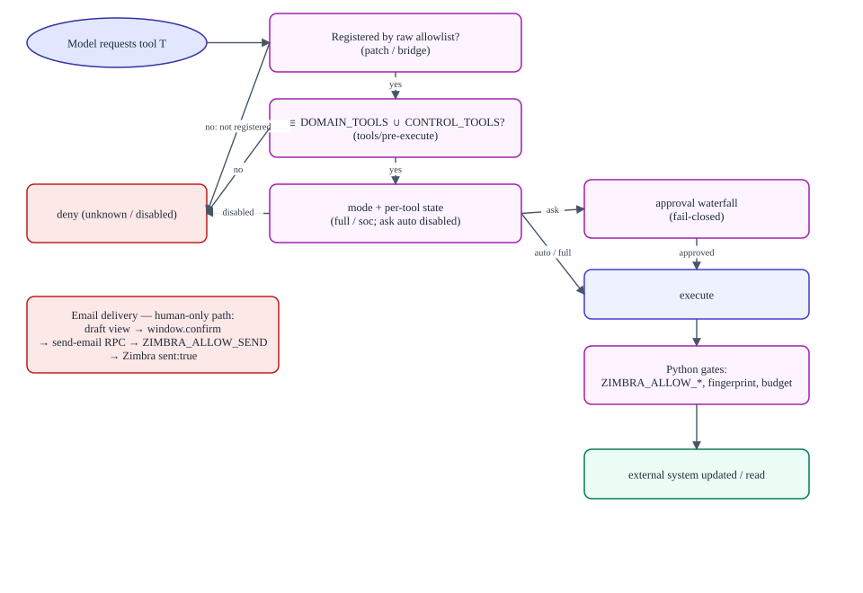
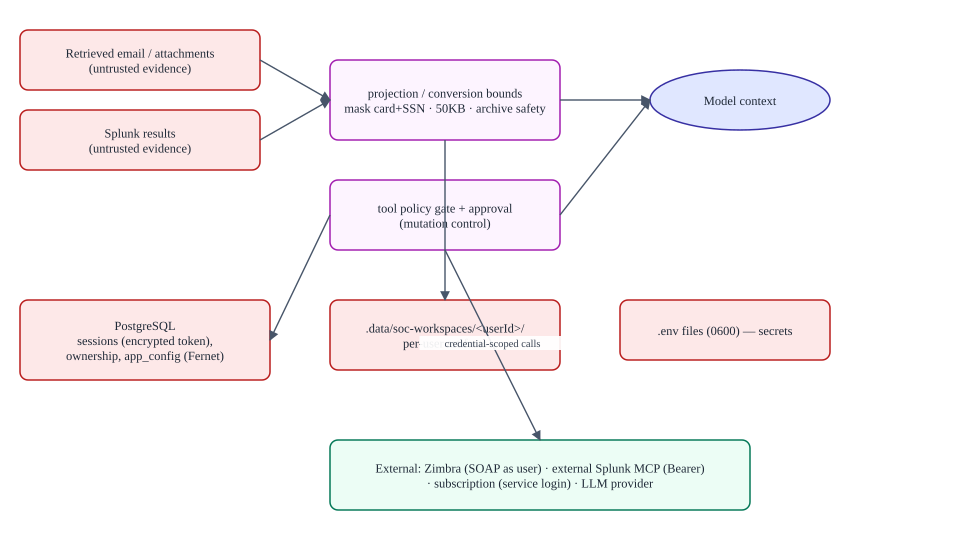

Security and authentication
Verified against commitb26d55d274cf298a456d84edfbcb42b8dc90134b(2026-09-11T15:35:35Z) · documentation verified 2026-09-12.
Presents: AUTHENTICATION_AND_OWNERSHIP.md + SECURITY_AND_TRUST_BOUNDARIES.md — the Markdown files are the source of truth.
Two principals, two stores
| Analyst | Administrator | |
|---|---|---|
| Verified by | Zimbra (via Python SOAP login) | Static SOC_ADMIN_EMAIL/PASSWORD, timing-safe compare, required at startup |
| Cookie | soc_session — 24 h, HttpOnly, SameSite=Lax | soc_admin_session — 8 h, in-memory (restart logs out) |
| Store | Postgres soc_app_sessions, Zimbra token Fernet-encrypted (Node reads omit the column) | In-memory Map keyed by SHA-256(token) |
| Replacement | Single-device: new login revokes others (new_device_login, one-shot notice) | — |
Identity authority. The authenticated server-side identity is authoritative: prompts and retrieved content cannot change the user. Every MCP call carries soc_session_id etc.; the Python server resolves it to the user's own Zimbra token and rejects account_id selection (account_selection_disabled). Ownership is enforced by Postgres claims plus a scoped API proxy over nine API domains (11 cross-user mutations denied in tests), with workspace paths contained under .data/soc-workspaces/<userId>/ against traversal and symlink escape. Event streams are filtered and redacted per user (credential-reference events become generic, foreign sessions dropped).
Action authorization

Data and trust boundaries

Control inventory (evidence class)
| Control | Evidence |
|---|---|
| Zimbra-backed login, generic failures, no echo | Test evidence (auth.test.js, test_auth.py) |
| Admin/user cookie segregation; privileged APIs admin-only | Test evidence |
| IDOR scoping, workspace containment, server-generated session ids | Test evidence |
| Exact-name tool allowlist at three layers; deny unknown | Test evidence (policy.test.js denies bash explicitly) |
| Model-facing shell/fs/subagent tools disabled; skills dir confined | Test evidence (skills.test.js) |
| Splunk output projection (PII mask, 50 KB) | Test evidence (investigation.test.js) |
Send path: draft-only tool + UI confirm + service gate + sent:true | Documented; the dialog itself is a UI-level control |
| Read-only Splunk boundary | Compositional (allowlist + policy + remote guardrails) — no protocol filter |
| Customer data separation | Operational assumption (AGENTS.md) |
Residual risks and recommendations
- Read-only Splunk is compositional — keep the naming-fence tests as release gates.
- Send confirmation is UI-level — server enforces auth + gate + acknowledgment but no confirmation token; product decision if the threat model requires one.
- CSRF posture relies on SameSite/Origin checks + fencing; consider explicit tokens if third-party origins appear.
- Retained Splunk code is one registration away from live; treat
test_server_tools.pyas a gate. - No CI at repo root — the guards run only if someone runs them; wire CI.
- Tracked generated bundle and the unclassified
hi.txt— see the audit.
Claim-level mapping: Traceability matrix.